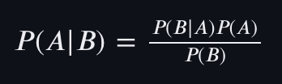

¿Qué es Naive Bayes?
Es uno de los algoritmos más simples y poderosos de aprendizaje automático. Naive bayes es de aprendizaje supervisado, se utiliza principalmente para clasificación, útil para trabajar con texto o datos categóricos (por ejemplo “spam” “no spam”). Tiene ventaja frente a los demás algoritmos al tratar con datasets muy grandes.
El algoritmo hace una suposición de independencia entre atributos. La suposición de independencia entre atributos puede no ser siempre cierta, en realidad, el algoritmo asume que el efecto de un atributo particular de una clase es independiente de otros atributos. Por ejemplo, un solicitante de préstamo es deseable o no dependiendo de sus ingresos, historial de préstamos y transacciones anteriores, edad y ubicación. Incluso si estos atributos son interdependientes, se consideran de forma independientes. Otro ejemplo es que si en un mensaje de texto aparece la palabra "buenos" el efecto es independiente de la palabra "días".
Regla de Bayes
En términos matemáticos se traduce en la siguiente forma:
P(A|B): probabilidad de que ocurra A sabiendo que B ya ha ocurrido. P(B|A): probabilidad de que ocurra B sabiendo que se ha dado A. P(A): probabilidad de que ocurra A. P(B): probabilidad de que ocurra B.
Ejemplo
Supongamos que tenemos que clasificar mensajes de texto como spam o no spam. Para ello se ha insertado 20 mensajes diferentes.
Se crea una tabla que indique cuántas veces aparece cada palabra y si el efecto deriva en un mensaje de spam o no spam.
Para la tabla anterior, se puede calcular la probabilidad de que aparezca "Amigo" en un correo No Spam. Para esto, se hace lo siguiente:
P(Amigo | NoSpam) = 5 / (8 + 5 + 3 + 1) = 5/17 = 0.29
Se realiza el proceso anterior para cada una de las palabras y se obtiene la siguiente tabla:
Ahora se puede calcular la probabilidad de que un mensaje sea spam o no spam. De las siguientes formas:
P(NoSpam) = (8 + 5 + 3 + 1) / (8 + 5 + 3 + 1 + 2 + 1 + 0 + 4) = 17/24 = 0.71
P(Spam) = (2 + 1 + 0 + 4) / (8 + 5 + 3 + 1 + 2 + 1 + 0 + 4) = 7/24 = 0.29
Con esta información, al llegar un mensaje nuevo con la palabra "Estimado" y "Amigo", se realizan los siguientes calculos para predecir si es spam o no spam:
P(NoSpam) * P(Estimado | NoSpam) * P(Amigo | NoSpam) = 0.71 * 0.47 * 0.29 = 0.10
P(Spam) * P(Estimado | Spam) * P(Amigo | Spam) = 0.29 * 0.29 * 0.14 = 0.01
Como se ve anteriormente, P(NoSpam) > P(Spam), por lo tanto, el mensaje es No Spam.
Laplace
En caso de que llegue un mensaje con una palabra que se encuentre 0 veces en la tabla, pero las demás palabras tengan el efecto suficiente como para inducir que el mensaje es spam, se puede utilizar la regla de Laplace para evitar que la probabilidad sea 0. Es decir, que se multiplique por 0 las probabilidades y de como resultado 0. Al Aplicar Laplace, se suma en 1 todas las ocurrencias, lo que hace que la palabra que aparezca 0 veces cambie a 1 y no perjudique a las demás.
Implementación detección de spam en SMS
En el siguiente código se importan las librerias necesarias.
Se crea la variable correos que representa un dataset bastante dummy, luego las etiquetas, en las que 0 representa no spam y 1 spam. Luego se vectoriza los strings que representan los correos.

Se divide el conjunto de datos en entrenamiento y testeo, además se inicializa el modelo naive bayes multinomial.
Se entrena el clasificador y se generan las predicciones con los conjuntos de prueba.
Se evalua el rendimiento del clasificador, obteniendo su exactitud, matriz de confusión y reporte de clasificación.
Conclusión
Es un algoritmo muy sencillo de implementar y de entender. Es un modelo facilmente interpretable. Es muy sencillo de entrenar y ajustar sus hiperparametros, aún asi es muy poderoso.
Bibliografía
JavatPoint (Click para ir al enlace)
Clasificadores Naïve Bayes - Aldo Miranda-Aguilar (Click para ir al enlace)
NAIVE BAYES - TEORÍA | #46 Curso Machine Learning con Python - AprendeIA con Ligdi Gonzalez (Click para ir al enlace)